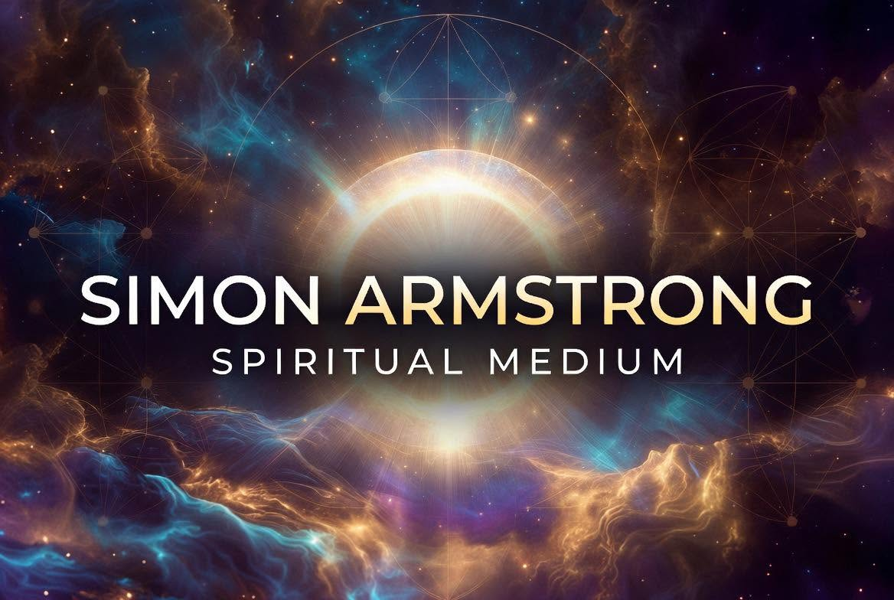

Contact
If you would like to enquire about church bookings, The Circle @ Greenside, or have any questions, I'd be delighted to hear from you.

Welcome to my official website.
Here you can find information about my mediumship, upcoming services, open circles and spiritual events.
My journey within Spiritualism has been one of learning, growth and a desire to bring comfort and understanding to others through mediumship.
I believe mediumship is about more than delivering a message. It is about bringing people together, creating moments of love and joy, and reminding us that the connections we share continue beyond this life.
Alongside my mediumship, I enjoy sharing philosophy, supporting others on their spiritual journey and creating spaces where people can explore Spiritualism with open hearts and open minds.
I provide demonstrations of mediumship for Spiritualist churches, venues and open circles across the UK, sharing evidence from Spirit with compassion, honesty and respect.
I also support spiritual events and gatherings where people can come together, learn and explore Spiritualism in a welcoming environment.
Open Hearts, Open Minds, Open Circle.
The Circle @ Greenside is a welcoming open circle where people can come together to experience mediumship, connection and support within a friendly spiritual environment.
Whether you are beginning your journey into Spiritualism, taking your first steps as a fledgling medium, or have been working with mediumship for many years, everyone is welcome.
We aim to create a space where people can explore, learn and share their experiences in a relaxed and supportive setting.
If you would like to enquire about church bookings, The Circle @ Greenside, or have any questions, I'd be delighted to hear from you.